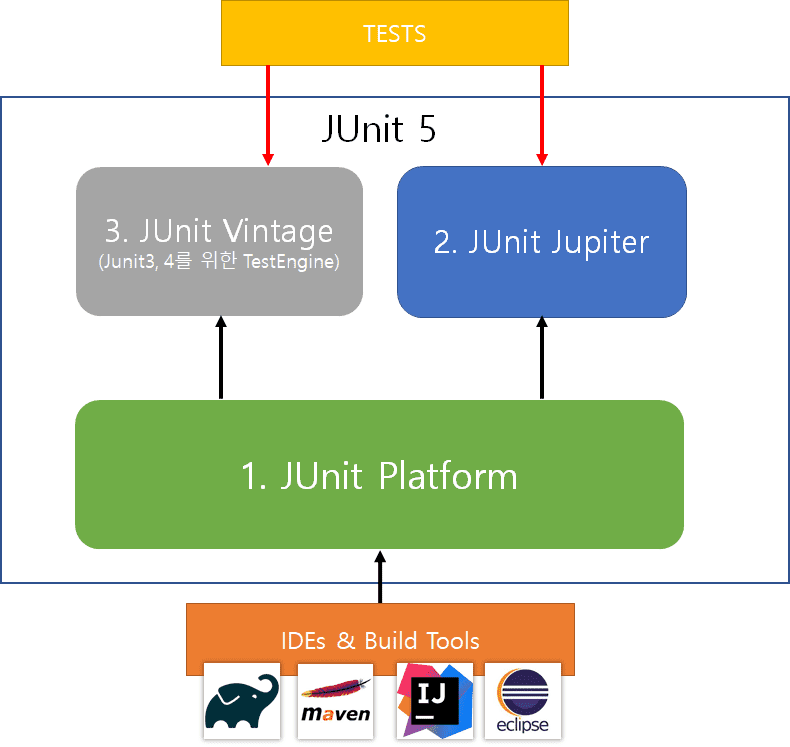

jUnit
- test framework.
Architecture

jUnit5 = jUnit Platform + jUnit Jupiter + jUnit Vintage
jUnit Platform : JVM상에서 실행하기 위한 기초로서, 테스트를 발견 및 실행하는 테스트 엔진 API를 정의하고 있다.
jUnit Jupiter : 테스트 엔진 API의 구현체. 테스트와 확장을 위한 programming model과 extension model의 조합임. 테스트 엔진 제공.
jUnit Vintage : jUnit3, 4 테스트엔진 API 구현체.
Annotations
jUnit LifeCycle Annotation
- @Test
- 해당 메서드가 테스트 메서드임을 명시할 때 사용함.
- 속성이 없음. test extension들은 자신들 각각의 annotation에 기반해 동작하기 때문.
- @BeforeEach
- 해당 메서드가 각 @Test, @RepeatedTest, @ParaemterizedTest, @TestFactory 메서드(이하 테스트 메서드)의 실행 전에 실행되어야 한다는 것을 명시한다.
- @AfterEach
- 해당 메서드가 각 테스트 메서드의 실행 후마다 실행되어야 한다는 것을 명시.
- @BeforeAll
- 해당 메서드가 모든 테스트 메서드의 실행 전에 딱 한번 실행.
- @AfterAll
- 해당 메서드가 모든 테스트 메서드의 실행 후 딱 한번 실행.
jUnit Main Annotation
- @SpringBootTest
- 통합 테스트 용도로 사용.
- @SpringBootApplictaion을 찾아가 하위의 모든 Bean을 스캔하여 로드한다.
- 그 후 Test용 Application Context를 만들어 Bean을 추가하고 MockBean을 찾아 교체
- @ExtendWith
- jUnit4에서의 @RunWith.
- 메인으로 실행될 Class 지정 가능.
- @SpringbootTest는 기본적으로 @ExtendWith 추가되어 있다.
- @WebMvcTest(Controller.class)
- 매개변수로 지정한 클래스만 실제로 로드되어 테스트가 진행된다.
- 매개변수 없을시 컨트롤러와 연관된 모든 Bean이 로드된다.
- @SpringBootTest가 통합 테스트 용도로 사용되었다면, @WebMvcTest는 컨트롤러 테스트를 위해서 사용한다.
- @Autowired about MockBean
- 컨트롤러 API 테스트를 위해 MockMvc 객체를 주입받을 떄 사용한다.
- .andExpect(), andDo(), andReturn()
- @MockBean
- 테스트할 클래스에서 주입 받고 있는 객체에 대해 가짜 객체를 생성해주는 어노테이션.
- 해당 객체는 실제로 동작하는 것이 아니다.
- @AutoConfigureMockMvc
- spring.test.mockmvc 설정 로드 + MockMvc 의존성 자동 주입
- MockMvc : REST API 테스트 클래스
- @Import
- Configuration component 사용 가능.
Test
테스트 코드의 필요성
- 메서드의 분리를 통해 하나의 기능만을 가지도록 구성할 수 있다.
- 요구사항이 변경되었을 경우 테스트 코드 없이 메서드 변경시 전체 프로세스 차원에서 문제가 발생할 가능성이 있다.
- 이러한 부분을 단위 + 통합 테스트로 사전에 방지할 수 있음.
- 방대한 기능의 애플리케이션의 경우 테스트 자동화 실현 가능.
- 1부터 100까지의 프로세스가 있고, 그 중 40번째의 코드를 수정할 필요가 있다고 할 때, 기능 분리가 가능하기 때문에 1~39의 기능은 메모리에 로드할 필요가 없어 테스트 시간 단축 가능
- 따라서 효율적이고 효과적인 유지보수가 가능하다.
통합 테스트
- 전체 비즈니스 로직에 대한 테스트.
- 모든 의존성을 로드하는 과정을 밟기 때문에 무거운 작업임.
단위 테스트
- 기능별로 진행하는 테스트.
- 필요한 환경만 메모리에 로드하여 실행한다. ex) @DataJpaTest
- given/when/then의 프로세스로 진행된다.
- FIRST 원칙
- Fast : 실행은 빠르게
- Independent : 독립적인 테스트가 가능해야.
- Repeatable : 테스트는 매번 같은 결과
- Self-Validating : 실행 자체로 결과 확인 가능해야.
- Timely : TDD원칙에 따라 본 코드 완성 전 구성 및 테스트 가능해야함.
단위 테스트를 위한 가짜 환경 구성하기
- 예를 들어 서비스 레이어만 테스트 하고 싶은데 서비스 레이어 테스트를 위해선 Repository 레이어에 대한 의존성 문제를 해결해야 할 수 있다. 물론 그 의존성을 DI받아 사용할 수도 있지만, 특정 기능만 분리하여 테스트하는 단위 테스트의 목적과는 맞지 않다.
- 이러한 문제를 해결할 수 있는 것이 Mockito를 이용하는 것.
- Mockito는 가짜 객체를 보관하는 환경.
단위 테스트를 위한 테스트 클래스 시그니처 상단에 @ExtendWith() 어노테이션과 매개변수로 MockitoExtension.class를 등록해준다.
그리고 의존성 객체를 필드로 선언하며 @Mock 어노테이션을 붙여주고
의존성을 담을 객체(서비스 레이어를 테스트하는 경우에는 서비스 객체)를 필드로 선언하며 @InjectMocks 어노테이션을 붙여주면, @Mock이 붙은 의존성들을 가짜로 해당 객체에 주입하여 메모리에 로드한다.
이들은 가짜이므로 Stub(행동 정의)를 통해 테스트의 범위를 좁혀줄 필요가 있다.
- ex) when(실행).thenReturn(실행 결과);
etc.
트랜잭션
클라이언트 -> Controller -> Service -> Repository -> Persistence Context -> DB
- Controller는 넘어온 data를 파싱, validation check 등 하여 service에게 dto 넘겨줌
- Service는 dto를 book entity로 변경
- Persistence Context는 1차 캐시 및 DB에서 넘어온 데이터가 있는지 check하고 있으면 update, 없으면 insert
Persistence Context는 persist 후 영속화된 객체를 Service에 넘기고 하는 프로세스로 진행되는데,
- 트랜잭션은 Controller -> Service에서 시작되고 Service -> Controller에서 종료된다.
- 트랜잭션 종료는 DB에 write할 수 없다는 걸 의미.
- 하지만 DB Session은 controller단에서 종료된다. 그 말은 Controller에서 Select는 가능하다. 따라서 그대로 영속화된 객체를 넘겨줄 경우, 만약 그 객체가 다른 타입의 엔티티와 연관관계를 맺고 있다면 messageConverter에서 client쪽으로 return하는 과정에서 get하게 되는데, lazy loading 발생하며 Persistence Context에 다른 연관관계를 맺고있는 엔티티를 다시 select하게됨. 그니까 쓸데없는 데이터까지 같이 딸려오게 되는 것. 그렇기 때문에 service에서 영속화된 엔티티를 가지고 필요한 데이터만 추출한 후 response를 위한 새로운 객체(영속화되지 않는 객체)만을 리턴하여 위 과정을 끊어주어야 한다.
Test data의 Scope
테스트 메서드는 종료될 때 rollback을 통해 데이터가 초기화된다. (@Transactional이 있는 경우). 단, @BeforeEach가 있는 경우에는 beforeEach 메서드부터 테스트 메서드 종료까지.
즉, 메서드 실행(트랜잭션 시작) -> 메서드 종료(트랜잭션 종료) -> Rollback의 구조인데, 트랜잭션 종료 후 flush되는 것이 아니라는 것이다.
그런데 만약 auto increment가 초기화되지 않는 문제 등으로 인해 @Sql을 수동으로 실행하게 되면 이 부분은 DB에 대해 쿼리가 날아가는 것이기 때문에 이 차이를 이해하고 있어야 한다.